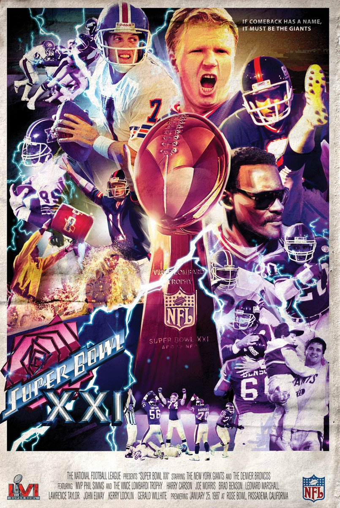
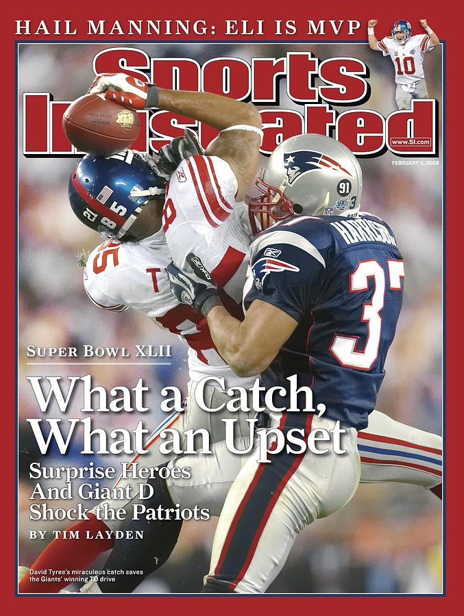

Super Bowl Championships
Super Bowl XXI was a professional American football game played on January 25, 1987, at the Rose Bowl Stadium in Pasadena, California. The game was contested between the Denver Broncos and the New York Giants. The Giants dominated the game with a record-breaking offensive performance, scoring 30 points in the second half and winning the game by a score of 39-20. Quarterback Phil Simms was named the game's Most Valuable Player (MVP) after completing 22 of 25 passes for 268 yards and three touchdowns. This victory marked the first Super Bowl win for the Giants in their franchise history, and it also established them as a perennial contender for years to come. The game also featured memorable performances from Giants wide receiver Phil McConkey and tight end Mark Bavaro, both of whom made key contributions to the Giants' offense. Super Bowl XXI is widely considered one of the most significant games in NFL history, as it helped solidify the Giants' reputation as a powerhouse team and set the stage for their future success.

Super Bowl XXV was held on January 27, 1991, at Tampa Stadium in Tampa, Florida. The game featured the Buffalo Bills and the New York Giants, and it is often considered one of the most exciting Super Bowls in history. The Giants won the game by a score of 20-19, with the outcome not being decided until the final moments of the game. The Bills had a chance to win the game with a last-second field goal attempt, but it missed wide right, giving the Giants the victory. The game is also remembered for Whitney Houston's stirring rendition of the national anthem, which became one of the most iconic moments in Super Bowl history. The game featured several future Hall of Fame players, including Bill Parcells, Lawrence Taylor, and Jim Kelly. Overall, Super Bowl XXV is remembered as a thrilling and memorable game that showcased some of the best talent in NFL history.
Super Bowl XLII was played on February 3, 2008, at University of Phoenix Stadium in Glendale, Arizona. The game featured the New York Giants, who were heavy underdogs, and the undefeated New England Patriots, who were seeking to become the first team since the 1972 Miami Dolphins to complete a perfect season. The game was a defensive battle throughout, with both teams struggling to score points. The Giants trailed 14-10 heading into the fourth quarter but scored a touchdown with just over two minutes remaining to take a 17-14 lead. The Patriots had a chance to win the game in the final minute, but quarterback Tom Brady was sacked and fumbled the ball, with the Giants recovering to secure the upset victory. Giants quarterback Eli Manning was named the game's Most Valuable Player (MVP) after leading a game-winning drive and completing a number of clutch passes throughout the game. The victory was the Giants' third Super Bowl championship in franchise history and is widely considered one of the greatest upsets in Super Bowl history

Super Bowl XLVI was a professional American football game between the New York Giants and the New England Patriots, held on February 5, 2012, at Lucas Oil Stadium in Indianapolis, Indiana. The game marked a rematch of the two teams' meeting in Super Bowl XLII, which the Giants had won four years earlier. In Super Bowl XLVI, the Giants once again emerged victorious, defeating the Patriots 21-17 in a closely contested game that saw several lead changes throughout. Giants quarterback Eli Manning was named the game's Most Valuable Player (MVP) after completing 30 of 40 passes for 296 yards and one touchdown. The game was also notable for a critical fourth-quarter drive by Manning and the Giants, which culminated in a touchdown catch by Mario Manningham. This victory marked the fourth Super Bowl win in the Giants' franchise history and solidified Eli Manning's reputation as one of the greatest quarterbacks in NFL history.